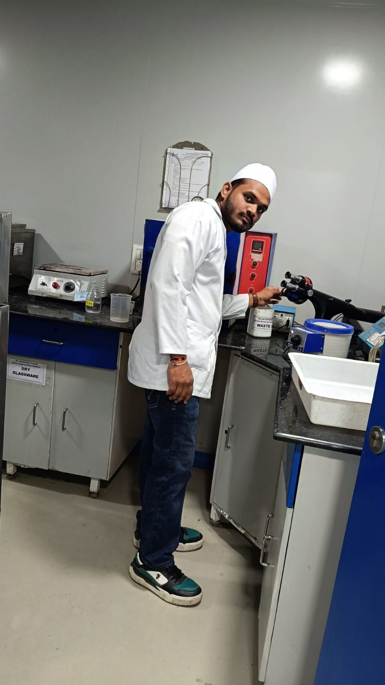

Professional Journey — Through the Lens
Each photograph captures a real moment of hands-on work, learning, and achievement — presented here as a professional story.
Industrial Training
Vellinton Healthcare, Baddi — Himachal Pradesh | WHO-GMP Certified Facility | Aug–Sep 2025
 QC Laboratory
QC Laboratory
HPLC Instrument — Quality Control Lab
The High-Performance Liquid Chromatograph (HPLC) used for quantitative analysis of active pharmaceutical ingredients in raw materials and finished products — central to every release test in the QC department.
Analytical Testing in Progress
Conducting HPLC-based assay on finished pharmaceutical products. Each run was preceded by system suitability testing — verifying retention time, theoretical plates, and tailing factor per USP guidelines.
 QC Department
QC Department
Mobile Phase Calculations
Precise calculations for preparing HPLC mobile phase formulations — correct buffer ratios, organic modifier percentages, and pH adjustment are critical for accurate, reproducible chromatographic separation.
 Bench Work
Bench Work
Mobile Phase Preparation & Evaluation
Hands-on preparation of mobile phase solutions including filtration through 0.45μm membrane filters and vacuum degassing — essential steps to eliminate particulates and dissolved gases that interfere with HPLC results.
 Stability Testing
Stability Testing
Stability Chamber Monitoring
Stability chambers maintained at controlled conditions (25°C/60% RH for long-term; 40°C/75% RH for accelerated studies) per ICH Q1A guidelines — vital for determining shelf life and storage conditions of pharmaceutical products.
 QC Testing Area
QC Testing Area
Packing Material Evaluation
Testing and documentation of primary and secondary packaging materials — checking dimensions, print quality, sealing strength, and material specifications to ensure every batch is packaged to GMP standards before product release.
 Microbiology
Microbiology
Autoclave Sterilisation — Microbiology Dept.
Steam sterilisation of culture media, glassware, and equipment in the microbiology department. Autoclave cycles at 121°C/15 psi for 15 minutes ensure sterility assurance level (SAL) of 10⁻⁶ for all microbiological testing materials.
 Microbiology
Microbiology
Microbiology Department — Quality Testing
The microbiology quality control area responsible for sterility testing, bioburden analysis, and environmental monitoring. Every pharmaceutical batch must pass microbial limit tests before release to market.
Academic Laboratory Research
Institute of Pharmacy, RMLAU — Ayodhya | Undergraduate Research | 2022–2026

RMLAU LabUndergraduate Laboratory Research — RMLAU
Hands-on pharmaceutical laboratory work at the Institute of Pharmacy, Dr. Rammanohar Lohia Avadh University. Academic lab training covered formulation science, analytical chemistry, pharmacognosy, and pharmaceutical microbiology — building the technical foundation for industrial and clinical work.
Academic Achievement & Recognition
World Pharmacist Day Poster Competition 2023 | Institute of Pharmacy, RMLAU | First Prize
 Award
Award
World Pharmacist Day Poster Presentation 2023
Presenting a research poster at the annual World Pharmacist Day event, Institute of Pharmacy, RMLAU. The poster communicated original pharmaceutical research findings to faculty, industry guests, and student peers — combining scientific depth with clear visual design.
 First Prize
First Prize
First Prize — World Pharmacist Day 2023
Awarded First Prize at the World Pharmacist Day Poster Competition, recognised for outstanding research quality, scientific accuracy, and presentation excellence. This achievement reflects the ability to communicate complex pharmaceutical science effectively to diverse audiences.
 Award Ceremony
Award Ceremony
Award Ceremony — Receiving the Recognition
The award ceremony at RMLAU where First Prize was presented by faculty in front of peers and invited guests. A proud milestone that validates the commitment to pharmaceutical research and the ability to perform at the highest academic level.